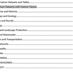

Project Description
The project proposes a geodatabase design to organize a large number of standalone feature classes and tables into a smaller number of feature datasets. It covers approximately 75 feature classes and three standalone tables.
When grouping the feature classes and tables into a feature dataset, the design considers topological relationships that may exist between the individual feature classes, and any possible relationships between the feature classes and tables.
The design applies the following considerations to group feature classes and tables into feature datasets:
- Logical or thematic groupings
- Feature classes which may need to be edited together (e.g. participate in a topology)
- Share the same coordinate system
- Other advanced feature dataset elements like utility networks
Geodatabase Design Report
The final project design report includes recommended definitions and groupings for feature datasets, feature classes, and tables.
Original Feature Classes and Tables
The original data consists of approximately 75 feature classes and three standalone tables as follows:
Census Block
Feature Class Name: CensusBlock
A subdivision of a census tract (or, prior to 2000, a block numbering area), a block is the smallest geographic unit for which the Census Bureau tabulates 100-percent data. Many blocks correspond to individual city blocks bounded by streets, but blocks—especially in rural areas—may include many square miles and may have some boundaries that are not streets.
Intersections
Feature Class Name: Intersection
A point of connection between two or more street centerlines where a mobile object can move from one street segment to another.
Building Line
Feature Class Name: BuildingLine
A repository to hold the lines associated with the development of the building feature class.
Gas Structure
Feature Class Name: GasStructure
Vaults and station structures that protect and provide access to underground and above ground gas devices and facilities.
Congressional District
Feature Class Name: CongressionalDistrict
The Congressional District layer was created to identify Congressional districts.
Transit Stop
Feature Class Name: TransitStop
A location for the pick-up and/or discharge of passengers using a public transportation system. Transit stops are generally classified by the mode(s) of transportation that it accommodates and the accessibility it provides for individuals with disabilities.
Fire Jurisdiction
Feature Class Name: FireJurisdiction
There are three primary features that will be considered; Fire Districts, Fire Response Areas and Fire Departments. Fire Districts serve primarily administrative and budgeting functions. They are created by the municipal governing body and are overseen by an elected Board of Fire Commissioners. A Fire Response Areas is a defined service area for fire fighting purposes. A Fire District may have multiple Fire Response Areas within it. A Fire Response Area may be served by multiple Fire Departments. A Fire Response Area is not necessarily confined to a municipal boundary.
Community Wellhead Protection Areas
Feature Class Name: WellHeadArea
A Well Head Protection Area (WHPA) is an area calculated around a Public Community Water Supply (PCWS) well in that delineates the horizontal extent of groundwater captured by a well pumping at a specific rate over two-,five-, and twelve-year periods of time for unconfined wells. The confined wells have a fifty foot radius delineated around each well serving as the well head protection area to be controlled by the water purveyor in accordance with Safe Drinking Water Regulations.
Legislative District
Feature Class Name: LegislativeDistrict
The Legislative district file was created to identify the legislative districts and was created using the legislative districts shown by the office of Legislative Services. The people of each district elect one Senator and two General Assembly members. Each district has about the same number of people in it, so each Legislator represents about the same number of people. New boundary lines for the districts are drawn every ten years after an official count or census has been taken of the people and where they live. The shapes of the districts may be changed to show changes in the population. City districts are usually small because more people live in a small area. Suburban and rural legislative districts may be very large, which shows that people live father apart.
Place
Feature Class Name: Place
Point coverage of place names and features that are found on the USGS 7.5' topoquad series, specifically locale and populated places. Locale is a place at which there is or was human activity; it does not include populated places, mines, and dams(battlefield, crossroad, camp, farm, ghost town, landing, railroad siding, ranch, ruins, site, station, windmill). Populated places (ppl) is a place or area with clustered or scattered buildings and a permanent human population (city, settlement, town, and village).
Dikes
Feature Class Name: Dike
The Bedrock Geology of X County consists of statewide and countywide data layers (contacts, faults, folds, dikes). The data are provided in: ESRI's ARC/INFO Geographic Information Systems (GIS) format. The GIS data were scanned and digitized from United States Geological Survey Miscellaneous Investigations and Open-File Series 1:100,000 scale geologic maps compiled from 1984 to 1993. The series is intended to provide the public with basic geoscience information for use in geoscience, natural resource and environmental analyses.
Hydroedge
Feature Class Name: HydroEdge
Hydroedges are the network of lines describing map hydrography. There are two types: flowlines, which trace water movement and shorelines, which form the interface between land and water.
Catch Basin
Feature Class Name: CatchBasin
A catch basin is a chamber, well or inlet designed to collect rain water which includes systems to collect debris and sediment and prevent the clogging of sewers.
Electric Station
Feature Class Name: ElectricStation
A building or fenced-in enclosure that houses the equipment, such as transformers, that switches and modifies the characteristics of energy from a generation source.
Recycling District
Feature Class Name: RecyclingDistrict
Areas created by the X County Recycling Division for the purpose of curbside material pickup. Areas are generally defined by the volume of materials that can be loaded onto a single Top Loading truck. Districts are parcel based.
Election District
Feature Class Name: ElectionDistrict
The territory within which there is a polling place or room for all voters in the territory (district) to cast their ballots at any election. In X County, the 4 Legislative districts are broken into 277 local election districts.
Signs
Feature Class Name: Sign
A board containing symbols and/or text expressing a traffic restriction, recommendation or information.
Block
Feature Class Name: Block
A grouping of parcels created by the municipal jurisdiction for the purpose of managing tax parcels. The tax blocks were created using the County's parcel dataset.
Easement
Feature Class Name: Easement
Easements are nonpossessing interests held by one person or entity in land of another whereby the first person or entity is accorded partial use of such land for a specific purpose. Numerous types of easements, both public and private in nature, are in use in X County. Easements considered for inclusion in the dataset are: right-ofway, drainage, bridge, utility, access and maintenance, and conservation.
Watershed
Feature Class Name: Watershed
Watersheds are the drainage areas contributing flow from the land surface to the water system. Watershed polygons are connected to the hydro network through a relationship to the HydroJunction at its outlet.
Sewer Service Area
Feature Class Name: SSA
Future and existing sewer service areas for X County. The data contains names of district areas and what resources were used for the creation of each boundary line segment.
Parcel Line
Feature Class Name: ParcelLine
A repository to hold the lines associated with the development of the parcel dataset. The Feature class has been subtyped into seven types of lines that are used to define parcel boundaries.
Zoning
Feature Class Name: Zoning
The dataset contains a composite zoning classification created by the County Planning Division as well as the municipal zone classifications derived from local zoning maps. The zone polygons were created through heads up digitizing using orthophotography and municipal zoning maps. The zones are not parcel based.
AMNET Sampling Stations
Feature Class Name: BioPTS2K
This is a GIS data layer of points representing sites sampled by X County as part of its Ambient Biomonitoring Network (AMNET). Sites are sampled in every subwatershed, statewide, where the health of in-stream benthic macroinvertebrate communities are evaluated using the U.S. Environmental Protection Agency's (USEPA) Rapid Bioassessment Protocol (RBP) 2.
Census Tract
Feature Class Name: CensusTract
A small, relatively permanent statistical subdivision of a county delineated by a local committee of census data users for the purpose of presenting data. Census tract boundaries normally follow visible features, but may follow governmental unit boundaries and other non-visible features in some instances; they always nest within counties. Designed to be relatively homogeneous units with respect to population characteristics, economic status, and living conditions at the time of establishment, census tracts average about 4,000 inhabitants. They may be split by any sub-county geographic entity.
Emergent
Feature Class Name: Emergent
Emergent Wetland depicts critical area maps for dependent species which are generated by selecting specific land-use classes from the LULC dataset. This dataset is a product of the Landscape Project, a proactive, ecosystem-level approach to the long-term protection of imperiled and priority species and their important habitats in X County. The purpose of this layer is to provide users with peer reviewed, scientifically sound wildlife data that is easily accessible and can be integrated with planning, protection and land management programs at every level of government (state, county, municipal) as well as non-governmental conservation organizations and private land owners.
Fault Line
Feature Class Name: FaultLine
The Bedrock Geology of X County consists of statewide and countywide data layers (contacts, faults, folds, dikes). The data are provided in: ESRI's ARC/INFO Geographic Information Systems (GIS). The GIS data were scanned and digitized from United States Geological Survey Miscellaneous Investigations and Open-File Series 1:100,000 scale geologic maps compiled from 1984 to 1993. The series is intended to provide the public with basic geoscience information for use in geoscience, natural resource and environmental analyses.
Natural Heritage Priority Macrosites
Feature Class Name: NaturalHeritage
The Natural Heritage Priority Sites Coverage was created to identify the best habitats for rare plant and animal species and natural communities through analysis of information in the Natural Heritage Database. Natural Heritage Priority Sites contain some of the best and most viable occurrences of endangered and threatened species and natural communities, but they do not cover all known habitat for endangered and threatened species.
Railroad
Feature Class Name: Railroad
A system for carrying transit passengers and/or freight described by specific right-of way, technology and operational features. Examples include: commuter rail, heavy rail, light rail, aerial tramway, automated guideway transit, cable car, inclined plane, and monorail. Types of service include: local service, express service, and limitedstop service.
FEMA Q3 Flood
Feature Class Name: Flood
The Q3 Flood Data are derived from the Flood Insurance Rate Maps (FIRMs) published by the Federal Emergency Management Agency (FEMA). The file is georeferenced to the earth's surface using the geographic projection and the decimal degree coordinate system. Specifications for the horizontal control of Q3 Flood Data files are consistent with those required for mapping at a scale of 1:24000. The FIRM is the basis for floodplain management, mitigation, and insurance activities for the National Flood Insurance Program (NFIP). Insurance applications include enforcement of the mandatory purchase requirement of the Flood Disaster Protection Act, which "requires the purchase of flood insurance by property owners who are being assisted by Federal programs or by Federally supervised, regulated, or insured agencies or institutions in the acquisition or improvement of land facilities located or to be located in identified areas having special flood hazards".
FOLD
Feature Class Name: Fold
The Bedrock Geology consists of statewide and countywide data layers. The data are provided in: ESRI's ARC/INFO Geographic Information Systems (GIS). The GIS data were scanned and digitized rom United States Geological Survey Miscellaneous Investigations and Open-File series 1:100,000 scale geologic maps compiled from 1984 to 1993. The series is intended to provide the public with basic geoscience information for use in geoscience, natural resource and environmental analyses.
Landscape Project Critical Forest Areas
Feature Class Name: Forest
The Forest data depicts critical area maps for forest-dependent species which are generated by selecting specific land-use classes from the LULC dataset. This dataset is a product of the Landscape Project, a pro-active, ecosystem-level approach to the long-term protection of imperiled and priority species and their important habitats
Landscape Project Critical Forested Wetlands Areas
Feature Class Name: ForestedWetland
The Forested Wetland data depicts critical area maps for forested wetland dependent species which are generated by selecting specific land-use classes from the LULC dataset. This dataset is a product of the Landscape Project, a pro-active, ecosystem-level approach to the long-term protection of imperiled and priority species.
Municipal Boundary
Feature Class Name: Municipality
A representation of municipal boundaries that was created using the County's parcel dataset. The boundaries are parcel based and may be inconsistent with other available sources of boundary information.
Geology
Feature Class Name: Geology
The Bedrock Geology of X County consists of statewide and countywide data layers (contacts, faults, folds, dikes). The data are provided in: ESRI's ARC/INFO Geographic Information Systems (GIS). The GIS data were scanned and digitized from United States Geological Survey Miscellaneous Investigations and Open-File Series 1:100,000 scale geologic maps compiled from 1984 to 1993. The series is intended to provide the public with basic geoscience information for use in geoscience, natural resource and environmental analyses.
Ambient Stream Monitoring Stations
Feature Class Name: SWPTS01
This dataset is a GIS layer of points representing ambient stream sites monitored cooperatively by the Department of Environmental Protection and the US Geological Survey (USGS) for water quality parameters. It includes fields identifying type of station for each monitoring year as well as the presence and type of water level gauge, the associated land use, the method of locating the points, the agency collecting the sample and the availability of flow data. A wide range of conventional parameters, metals, pesticides and sediments are monitored in this program. Metals, pesticides and sediments are monitored on a reduced sampling frequency.
Landscape Project Species Specific Habitat
Feature Class Name: TESpecies
The purpose of the Landscape Project Species feature class is to provide users with peer reviewed, scientifically sound wildlife data that is easily accessible and can be integrated with planning, protection and land management programs at every level of government (state, county, municipal) as well as nongovernmental conservation organizations and private land owners. The species specific habitats included in this feature class are: bald eagle foraging areas, urban peregrine falcon nesting areas, and wood turtle habitat.
Topography
Feature Class Name: Topography
Topographic elevation contour lines for X County have been assembled for use in Geographic Information Systems (GIS). These data are georegistered to the NAD83 State Plane Coordinate System and are based on: 1) the 1:100,000 scale, U.S. Geological Survey Digital Line Graphs (DLG-3) of topographical-relief contours (hypsography)
Freshwater Wetlands
Feature Class Name: Wetlands
This data consists of freshwater wetlands (FWW) data generated under the Freshwater Wetlands Mapping Program. The FWW are coverages with both linear and polygon wetlands delineated and coded. Freshwater wetlands delineations were made on 1986 orthophoto quarterquad basemaps (1:12000) by photo interpretation of 1986 CIR photos. The classification system used was a modified Cowardin system (Cowardin, et al., 1979). All freshwater wetland polygons greater than 1 acre in area and all linear freshwater wetland features greater than 10 feet in width were mapped.
Bedrock Aquifers
Feature Class Name: BedRockAquifer
The bedrock-aquifer coverage includes fractured-rock aquifers of the Valley and Ridge, and Highlands.
Public Transportation
Feature Class Name: PublicTransit
Public transportation includes all multiple-occupancy vehicle services designed to transport customers on local and regional routes. In X County these services are: private and public buses; rail; Amtrak; intercity bus; Para-transit services for senior citizens and persons with disabilities.
Parcel Line Working
Feature Class Name: ParcelLineWorking
Parcel working lines is the maintenance environment for the parcel dataset. This feature class will be used to house the information that is extracted from the data through the digital submission standard.
Bridge
Feature Class Name: Bridge
A structure including supports erected over a depression or an obstruction, such as water, highway, or railway, and having a track or passageway for carrying traffic or other moving loads, and having an opening measured along the center of the roadway of more than 20 feet between undercopings of abutments or spring lines of arches, or extreme ends of openings for multiple boxes; it may also include multiple pipes, where the clear distance between openings is less than half of the smaller contiguous opening.
Dam
Feature Class Name: Dam
Dams are any artificial dike, levee or other barrier, together with appurtenant works, which is constructed for the purpose of impounding water on a permanent or temporary basis, that raises the water level five feet or more above the usual, mean, low water height when measured from the downstream toe-of-dam to the emergency spillway crest or, in the absence of an emergency spillway, the top-of-dam.
Police Jurisdiction
Feature Class Name: PoliceJurisdiction
A geographical area within which a primary law enforcement agency has law enforcement authority. In X County this is generally defined by municipal boundaries. Law enforcement services may also be provided through shared services agreements between municipalities and by the state Police.
Pump Station 2000
Feature Class Name: PumpStation2000
To provide data and maps of future and existing sewer pumping stations. The database contains information about resources used for the creation of each point and whether the pumping station exists or planned for the future.
Groundwater Recharge
Feature Class Name: GroundWaterRecharge
An estimation of ground-water recharge areas for X County. Recharge was ranked by volume (billions of gallons/year) using natural breaks in the percentage of total volume.
Subwatershed Boundaries
Feature Class Name: HUC14
Drainage basins are delineated from 1:24,000-scale (7.5-minute) USGS quadrangles. The delineations have been developed for general purpose use by USGS District staff over the past 20 years.
Hydro Junction
Feature Class Name: HydroJunction
Hydro junctions are a set of points located at the ends of flow segments and at other strategic locations on the flow network.
County Boundary
Feature Class Name: CountyBoundary
A representation of the County boundary that was created using the County's parcel dataset.
Hydro Network Junction
Feature Class Name: HydroNetwork_Junctions
Hydro Network Junctions are generic junctions created whenever two edges meet.
Parcel
Feature Class Name: Parcel
A parcel is a plot of land, generally a subdivision of a municipality represented and identified by a recorded plat or deed. Parcels are polygon map features that indicate land ownership and can be used alone or in conjunction with other datasets to establish spatial relationships. The parcel dataset is one of nine County framework datasets and serves as the primary vector data for the development of derivative data.
Land Use/Land Cover
Feature Class Name: LULC
The shapefile was created by comparing the 1986 land use/land cover (LU/LC) layer from the geographical information systems (GIS) database to 1995/97 color infrared (CIR) imagery and delineating areas of change. Work for this dataset was done by Aerial Information Systems, Inc., Redlands, CA. LU/LC changes were captured by adding new line work and attribute data for the 1995/97 land use directly to the base data layer. All 1986 LU/LC polygons and attribute fields remain in this dataset, so that change analysis can be undertaken from this one layer. The classification system used was a modified Anderson et al., classification system. An impervious surface (IS) code was also assigned to each LU/LC polygon based on the percentage of impervious surface within each polygon as of 1995/97. Minimum mapping unit (MMU) is 1 acre.
Monitoring Point
Feature Class Name: MonitoringPoint
Monitoring points are locations where water is measured, such as stream gauges, rainfall gauges, or water quality monitoring sites.
NRCS SSURGO Soils
Feature Class Name: Soil
This dataset is a digital soil survey and generally is the most detailed level of soil geographic data developed by the National Cooperative Soil Survey. The information was prepared by digitizing maps, by compiling information onto a planimetric correct base and digitizing, or by revising digitized maps using remotely sensed and other information.
Streams with Surface Water Quality Classifications
Feature Class Name: StreamSWQC
This data is a digital representation of Surface Water Quality Standards in accordance with "Surface Water Quality Standards". The Surface Water Quality Standards (SWQS) establish the designated uses to be achieved and specify the water quality (criteria) necessary to protect the State's waters. Designated uses include potable water, propagation of fish and wildlife, recreation, agricultural and industrial supplies, and navigation.
Surficial Aquifer
Feature Class Name: SurficialAquifer
The surfical-aquifer coverage includes glacial sediment exceeding 50 ft. thickness and surfical sediment thicker than 50 ft.
Waterbody
Feature Class Name: Waterbody
Waterbodies are all the significant ponds, lakes, and bays in the water system. Waterbody polygons are connected to the hydro network through a relationship to the HydroJunction at its outlet.
Buildings
Feature Class Name: Building
A seamless planimetric roofline layer that contains Building rooflines
Building Working
Feature Class Name: BuildingLineWorking
A repository to hold the lines associated with the development of the buildings layer.
Airport
Feature Class Name: Airport
The location of air travel facilities and the transfer of passengers and goods from multiple modes to air transport.
Street Centerlines
Feature Class Name: Street
A representation of rights-of-way for one or more types of variable-path, land based mobile objects including automobiles, trucks and bicycles. Street centerlines can have an extensive amount of attribution data such as: speed limit, address ranges, direction of travel, and lane width. It has been identified as a framework dataset.
Traffic Signal
Feature Class Name: TrafficSignal
A static traffic control device consisting of a multi colored light used for governing the flow of vehicular traffic.
Trails
Feature Class Name: Trails
A linear network of non-vehicular travel ways for transportation and recreation purposes. Trails will vary type, physical condition, accessibility and permitted access. Subtypes include: bikeways, equestrian paths, canals, pedestrian paths, and multiuse.
Storm Water Line
Feature Class Name: StormWaterLine
A pipe or ditch for carrying storm water surface runoff. This is a separate system from a sanitary sewer or waste water system.
Discharge Point
Feature Class Name: DischargePoint
A discharge point is a known point where an intentional or unintentional action or omission resulting in the releasing, spilling, leaking, pumping, pouring, emitting, emptying, or dumping of a pollutant into the waters of the State, onto land or into wells from which the pollutant might flow or drain into such waters, or into waters or onto lands outside the jurisdiction of the State which pollutant enters the waters of the State, and shall 'include the release of any pollutant into a municipal treatment works.
Electric Lines
Feature Class Name: ElectricLines
Electric lines consist of both above and below ground primary conductors and secondary networks that deliver electric power to distribution substations. Distribution substations usually have a number of feeders.
Gas Pipe
Feature Class Name: GasPipe
The network of pipes that deliver gas from the gas structure to the consumer.
Wastewater Franchise Areas
Feature Class Name: Franchise
The data were created from Mylar maps. The database contains names of Wastewater franchise areas and what resources were used for the creation of each boundary line segment.
Sewer Line
Feature Class Name: SewerLine
Future and existing sewer lines for X County. The database contains information about resources used for the creation of each line segment, whether the sewer line is existing or planned for the future and type of sewer line.
Landscape Project Critical Grassland Areas
Feature Class Name: Grassland
The Grassland data depicts critical area maps for grassland dependent species which are generated by selecting specific land-use classes from the LULC dataset. This dataset is a product of the Landscape Project, a pro-active, ecosystem-level approach to the long-term protection of imperiled and priority species and their important habitats.
Groundwater Contamination
Feature Class Name: GroundWaterContamination
This data layer contains information about areas in the state which are specified as the Currently Known Extent (CKE) of ground water pollution. CKE areas are geographically defined areas within which the local ground water resources are known to be compromised because the water quality exceeds drinking water and ground water quality standards for specific contaminants.
Treatment Plant
Feature Class Name: TreatmentPlant
To provide data and maps of future and existing treatment plants. The data contains information about resources used for the creation of each point, whether the treatment plant is existing or planned for the future, name of the facility and any needed additional comments.
WQMA
Feature Class Name: WQMA
The database contains names of wastewater management plan areas and what resources were used for the creation of each boundary line segment.
BLDGADDRESS
Table to house all of the address information associated with the buildings feature class. This is a 1:M relationship between the addresses and the buildings to accommodate for structures that have more than one address associated with it.
PARCEL2BUILDINGS
This table is a M:N relationship table between the parcels to buildings.
ZONINGLUT
The zoning look up table contains the definitions of all the local zone classifications and their relationship to the County-wide general zoning classifications. The local zone classifications are from the official zoning maps adopted by each municipality. The generalized zone classifications were created by the X County Planning Division for the purpose of having common county-wide classifications.